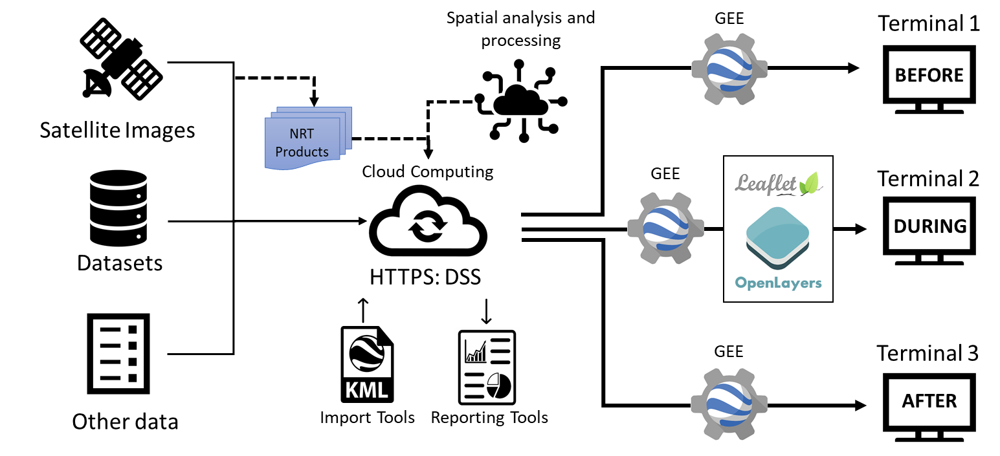

How does DSS-FIRE work?
The DSS-FIRE Wildland Fire Decision Support System is an online platform developed under the infrastructure of a Web viewer, which combines two technological components. First, the new cloud computing technology available from Google Earth Engine (GEE) to analyze and visualize an extensive catalog of satellite imagery and geospatial datasets. Second, the visualization of satellite information, using open source libraries from Leaflet and OpenLayer for interactive global-scale data mapping in Near Real-Time NRT or that are available between 8 and 40 hours after the satellite observation.
DSS-FIRE Support System Structure
Applications or Terminals
The pre-operational DSS-FIRE model was developed and implemented using Google Earth Engine, Leaflet and OpenLayers which are open source JavaScript libraries used to create web mapping applications. This system helps fire managers and analysts make strategic and tactical decisions for fire incidents. It is a process that is easier to use, and intuitive. The DSS-FIRE integrates the various applications used to manage fires into a single system, which streamlines the analysis and reporting processes in any of the three (3) phases of fire disaster risk management:
Before the fire:
Here we monitor all the parameters that influence the generation and spread of forest fires. Monitoring each of the climatological and physiographic variables, such as average surface temperature, wind direction and speed, relative humidity, among others. Likewise, the layers of the index of susceptibility to the occurrence of forest fires and the adequacy of the Canadian index of meteorological danger to forest fires or FWI are modeled.
During the Fire:
In Terminal 2 all those variables related to fire generation, spread and progress are monitored in near real time NRT, or to the extent of information availability. HotSpots or hot spots related to forest fires are monitored. A true color RGB image is displayed, in order to monitor fire hot spots and their emissions.
After the Fire:
Finally, Terminal 3 shows the effects caused by wildfires, showing both the perimeter of the burned area and the different severity levels. You can also see some historical statistics of past and recent fires.
Near real-time data and service visualization (NRT)
Data visualization can be accomplished globally through web mapping services such as Global Imagery Browsing Services (GIBS), which provide visual access to NASA Earth observations through standardized WMS, WMTS, and WFS web services.
VIIRS Band-I Map: Live fire data at 375 m
These services are designed to facilitate visual discovery of phenomena such as hazards and disasters, support timely decision making on natural hazards, transfer knowledge, and make earth observation imagery more accessible to all countries in general.